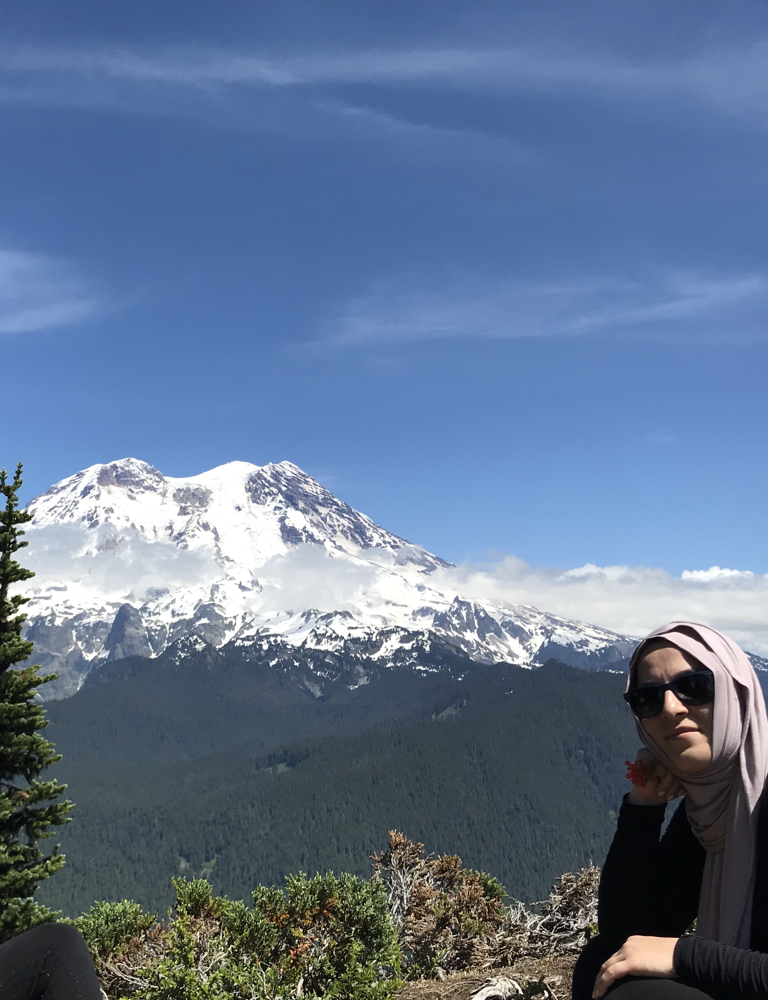

ABOUT ME
A human who knows growing is all about adaptation.
A person who believe learning must be never ending.
A mother who wants to be capable of use same technologies with her children.
MY BACKGROUND
- Ibrahim Hakki Sience High School (2001)
- Selcuk University Meram Medical Faculty (2008)
- Medical Doctor (2009-2010) Health Ministry Emergency Servis

INTEREST AND HOBBIES
human psychology - pilates
- hiking
- swimming (photo from top of gracial wiev trail at Asford)
SOME OF MY PROJECTS AT EPICODUS
- hello-world
(used HTML,CSS) - vacation site
(used HTML,CSS with bootstrap)Bootstrap , 08/08/2019 By Zubeyde Sisman & Vera Weikel - cookie-recipe
(used HTML,CSS) - my-first webpage
(used HTML,CSS)HTML practicing , 8/6/2019 By Zubeyde Sisman & Bahay Gulle Bilgi & Vera Weikel - goodbye
(used HTML,CSS)